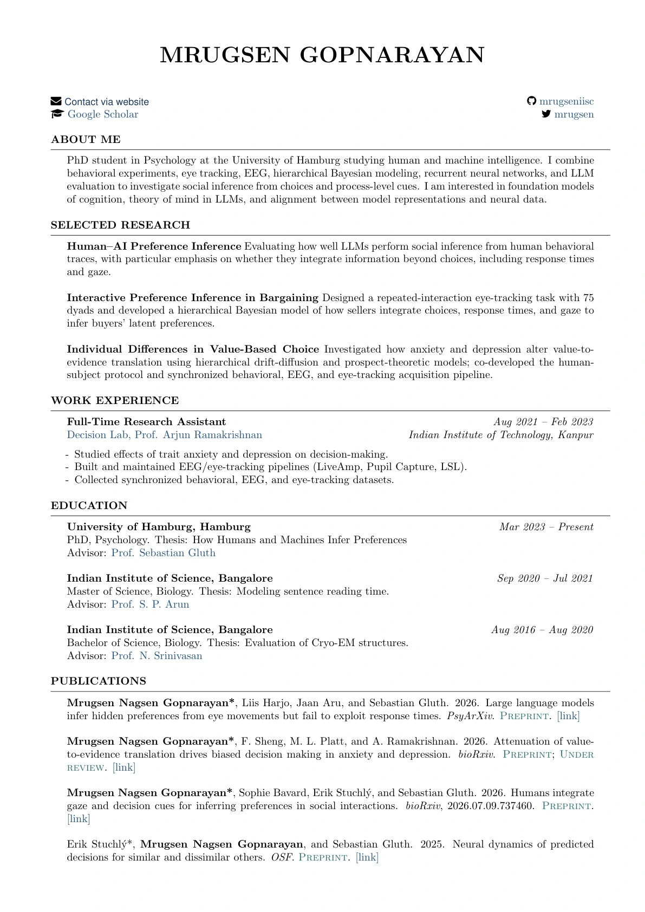
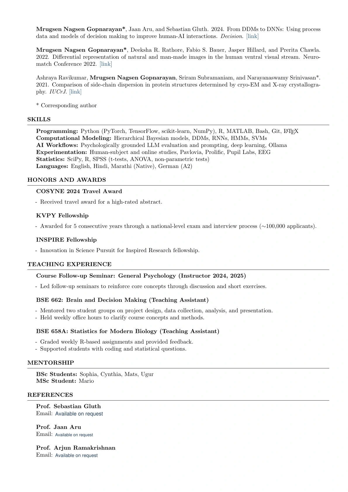

Curriculum vitae · two pages
Experience at a glance.
Research, publications, teaching, and mentoring.
Contact details are available on the contact page.
Download CV

For searchable text and document zoom, open the PDF directly.